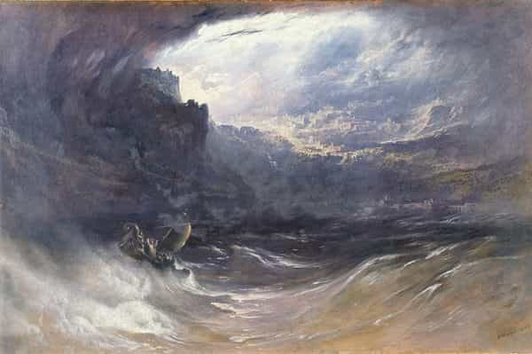

A coloured South African, and student of the ancient near east.


This is the most important issue of our time. Our world’s climate is at urgent breaking point! The planet is warming, the oceans are rising and the flood is inevitable! Civilized man is the villain knowingly committing this crime! His carbon footprint is his greatest sin and his mythological worldview compels him to expect the planets retribution! But hope exists in the form of a culture hero. Leonardo DiCaprio is not only warning people of their impending doom, he is also the champion of the crusade against it.
Before the Flood is documentary about man-made climate change currently making waves in South Africa. It was produced, narrated and elucidated by DiCaprio who presents this myth as though his voice is the first to do so. About 300 deluge narratives can be counted throughout the world. Five of them are significant for Western civilization because they contain the same formula used by the modern disseminator of this propagandistic tale.
The flood myth is basically this: the gods decide to wipe us out because we’ve degraded and destroyed paradise. The great flood is their preferred method though they do occasionally use plagues and droughts. Under divine, or inspirational instruction, the righteous hero mitigates mankind’s course in time. He is divinely rewarded for his achievement.

Conceptualizing the mythic narrative.

The Genesis 6.5 – 8.22 version is certainly the most well-known. Our modern conception of sin is derived from an education in Biblical, and therefore Hebrew history and morality. So it’s worth noting the wickedness of man, and how every imagination of the thoughts of his heart was only evil continually. There is no ambiguity, man and all that he has done in the process of living on earth is deemed corrupt and violent. So all life has to end with the exception of the perfect man who walks with God—Noah.
The human race renewed by the bones of Gaea.
In the Greek tradition, the degenerate age of mankind is described as a period when men respect neither their vows, nor justice, nor virtue. Zeus wants to annihilate the human race, but Prometheus warns his son Deucalion. He and his wife Pyrrha survive the flood and change mankind’s course by appeasing Zeus. The descendants of Deucalion, the Hellenes, become humanity’s new perfect form.
I will say hidden things to you and make known a secret of the gods.
The eleventh tablet of the Akkadian epic of Gilgamesh was inserted into The Epic of Gilgamesh around 1200 BC. In this famous work of cuneiform literature, Ut-napishtim is the hero concerned with ensuring life under the threat of god-controlled climate change. No reason is given for the gods decision to drown humanity but one of them Ea, warns Ut-napishtim, thereby preventing total destruction. The gods show remorse and gift the hero with immortality.
Hearken to the message that he shall make known to you.
In an earlier copy, from around 1600 BC, the all-wise and pious king Atrahasis is warned to build the ark and prep for the deluge. Here the weather god Enlil wants to eradicate city-dwelling man. He apparently does this every 1200 years—alternating between plagues, droughts and floods. But on this occasion it’s our dense urban overpopulation and the associated noise pollution that triggered him.
All the devastating winds and storms came, and the flood storm swept over the great cities.
The Sumerian myth, copied around 1900 BC, has Ziusudra as the original form of the Noah character. The gods grow hostile to mankind for the perceived noise and general disturbance we cause. The divine solution is a cleansing by water. The humble and obedient hero is warned by the god Enki, he builds a ship, saves the seed of mankind and is ultimately given life like a god in the new phase of human moral evolution.
Flood narratives are the result of folk memory. Various local disasters were experienced by some societies who then transmitted their story to others. For instance local flooding was frequent in Mesopotamia but there just aren’t any rivers capable of it in the Canaanite region. So it must have been borrowed by the Israelite tradition from a particularly authoritative disseminator of culture.
Politicizing the myth.
The purpose of these myths was to regulate human behaviour by convincing people that successful urban life is contemptible and annoys the planet to the extent that divine retribution should be expected. Moralized climate change is understandable for the ancients. These were religious texts after all. People believed the dogma because they had faith in its authoritative source.
Moralizing the narrative.
Today, the disseminator of the new version expects you to dogmatically believe it based on his faith in the people who told him about modern science, the scientific method, and empirical truths. An actor was enlisted to spread these “truths,” hoping to convince you based on personal authority.
Feed scrap to dogs and they’ll wag their tails.
Western culture has a long and interconnected literary tradition of the climate change narrative, and all versions are better than Before the Flood. Fossil fuel emissions, greenhouse gases, CFC’s, overpopulation and deforestation are just recent echoes of the same familiar themes we’ve always associated with the success of civilized life. Climate change and its apparently inevitable floods are simply a part of the experience. But maybe our sanctimonious Hollywood hero, with his concern for all life, is aware of some great truth that has managed to escape the minds of all history’s greatest thinkers.
Read more on the three Mesopotamian Flood Myths in: Beyerlin, W (ed) 1975. Near Eastern Religious Texts Relating to the Old Testament. Philadelphia: The Westminster Press.
Read More: 60 Myths On Memory, Learning, Sleep, And Creativity